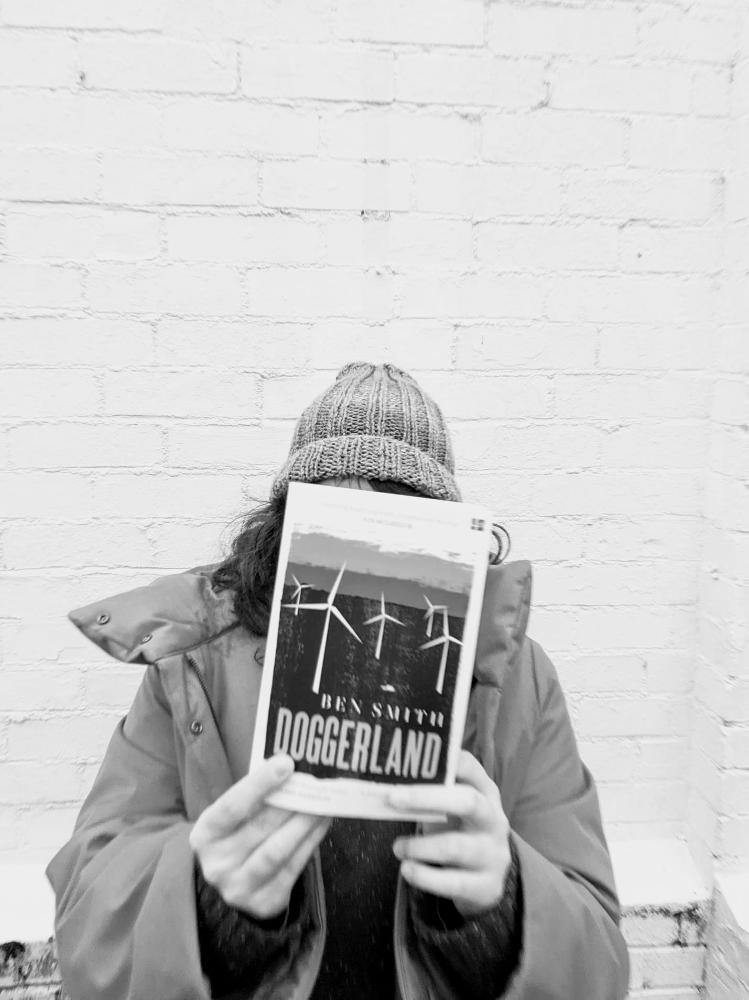

Doggerland: In Conversation with Ben Smith
An interview with Ben Smith
After a serendiptious meeting at the University of Exeter Global Systems Institute's Tipping Points Conference, I had the great luck and fortune to meet Dr Ben Smith himself, and afterwards to chat with him about Doggerland.
Doggerland is a fantastic example of climate fiction: it is not an overt statement on climate, or a long eulogy to the world that once was. It is an intimate portrayal of grief, betrayal, and the relationships that we make when we have to get on with the business of: surviving.
Climate fiction as a genre begets questioning--after all, isn't everything, from the latest romance novel that questions how humans can connect in today's day and age, to the fantasy novel that envisions the kinds of future we want to live in, a reflection of how we interact and, most importantly, react to the climate?
"I think [climate fiction] is one of those terms that will probably stick around," says Smith. "I think there will be more and more [authors] keen to use this term. Definitely for the next decade or so, it will be really important in just the same way that protesting about climate change will be increasingly important." After all, he says, "Books now have to be climate fiction because we're living in the era of climate change."
First coined by a news reporter and climate activist, Dan Bloom, in 2007 or 2008, climate fiction has increasingly been popularised since NPR and Christian Science Monitor reported stories in 2013 about a new literary movement wherein anthropogenic climate change was a major element in the works. However, climate change in literature is not a phenomenon relegated exclusively to the 2000s, with many retroactive labels on the works of authors such as Octavia Butler.
These works have most often tended to be science fiction or dystopic in nature, with Smith noting: "Climate fiction has always been associated with dystopian fiction, partly because of the kinds of writers who have written it. Think of Margaret Atwood. I mean, she wrote dystopias before she wrote Oryx and Crake, which is all about climate change. And then I guess the sort of people who read Atwood and enjoy her writing, well they're probably going to be the sort of people who would enjoy science fiction such as Kim Stanley Robinson. Turning to him or other writers, who will similarly be pushing towards that direction--it's just a kind of natural way that the tradition has developed."
I asked Smith if he felt climate fiction was an apt label for Doggerland--earlier having noted that actually when scouting for it in Waterstones, it was stored in general literature after being listed in science-fiction, sending the shop assistant and I on a topsy-turvy scour through three landings of books. Smith agrees with the label of climate fiction, and potentially even dystopia.
Yet I find describing Doggerland as an out-and-out depiction of dystopia teeters on the edge of reductive. There are strong groundings of existentialism, and most certainly the lives the characters lead aren't glamorous, with an ending that definitely couldn't be categorised as happy by any means--and yet it's not quite post-apocalyptic, either. Perhaps that's the most uncomfortable part: the degrees of separation between Doggerland's characters and settings, controlled and ruled by anonymous, ever-changing corporations, and us, at the whims of the elite who control every facet of where our money goes, aren't particularly large. The characters--they endure, they survive, they repair. We--we can, we will, we must do the same.
That glimmer of hope is enough for me--but I am trained as an atmospheric scientist; it doesn't take much for me. How can writers balance between showing the truth of where we are headed, and not overloading readers less heart-hardened than I with endless depictions of dire straits?
"I think there's a danger with dystopian fiction that it can make people feel apathetic, but then if that gets people reading that stuff, I think that's why a lot of writers turn to it," says Smith. "It's one of the easiest ways of dramatizing it."
Smith's thoughts about writing about climate elucidate how climate crisis science communication can so often not land with mainstream audiences. In Doggerland, both time and nature act as tempestuous characters of their own, albeit on scales that are simply not as tangible for us short-lived humans, such as we are ruled by political elections every four or five years or so; news cycles on 24 hours; social media on tap and providing minutiae at an indigestible scale.

"As a writer, what does climate change do to narrative drama and tension? It's operating at a scale that's so much bigger than the human narratives that you're telling, and that's something [sic] writers like Amitav Ghosh highlight the problem of… literary realism doesn't allow you to write what you need to about climate change, and climate change doesn't allow for it to be written in that mode of literary realism."
Technically, "Those kind of scale effects--one of the easiest ways around that is you project into the future at a point where this is a human crisis at a day-to-day level. So you're projecting that to make it fit, or to make it comprehensible at a human time scale."
Doggerland might be one of the most fitting places to investigate climate change not only through the future, but the past. It is currently a site that represents a hopeful future for us, with wind farms both already present and increasingly planned there, but it was once the site of one of the largest cradles of Mesolithic culture. We have been on this ground before--we have faced a Flood. Only this time--it's of our doing. This juxtaposition, and the unjudgmental continuance of time and ocean smoothing over this land in Doggerland’s flashbacks, brings to fore the violence we are choosing in continuing climate warming. It is a tool Smith mentions--using non-human elements to give a that sense of scale back in climate writing, which he notes is more dominant in non-Western traditions, such as Indian writing like Amitav Ghosh's.
When I ask Smith about what he feels positive about in regards to the climate crisis, he mentions the younger generations, that current sense in the air that something is heading towards a breaking point in how we talk about climate change. "The kind of social tipping points that we're reaching are positive, like the fact that actually green energy, on an even playing field, is cheaper by far now than fossil fuels. So actually, that means that all you have to do is you have to stop government stacking the market in favor of fossil fuels…the hardest thing is always overturning the status quo. But when the status quo just stops even making sense, then that's actually when [sic] you really see things starting to change."
With books like Doggerland, I can join in the optimism. More momentum is gained the more these kinds of books--empathetic, kind, even if they are stark and unrelenting--are written and read. It allows for readers to escape having to do the scary part of imagining what these potential futures look like, and instead figure out how they can be a part of the solution.
For this post's recommendations, I turn to Ben Smith's inspirations:
- Samuel Beckett's plays End Game and Waiting for Godot: "They are wonderfully post-apocalyptic, but it's that sense of--they're just kind of kicking around at the end of the world rather than trying to do anything about it, which I think is like very realistic." The glass bottle recycling centres mid-pandemic most certainly agree not all of us were baking sourdough and going on endless runs, and as such neither would we all be the Katniss Everdeen in a dystopic situation.
- Ministry for the Future by Kim Stanley Robinson, as well as the Mars trilogy
- Swimmer Among the Stars by Kanishk Tharoor, a short story collection
- Exhalation by Ted Chiang
- Move: The Forces Uprooting Us by Parag Khanna
- The Overstory by Richard Powers